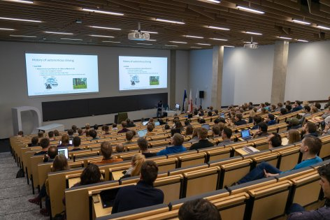

Aastal 2024 avaldasid sisseastumis soovi Tartu Ülikooli informaatika erialale 430 inimest.

Aastal 2024 avaldasid sisseastumis soovi Tartu Ülikooli informaatika erialale 430 inimest.

Algas kultuuripealinna aasta Tartu 2024.
Ukraina välisminister Dmõtro Kuleba teatas, et Venemaa on alustanud Ukraina vastu täiemõõdulist sissetungi.
Tallinn, Stenbocki maja, 12. märts 2020 – Valitsus kuulutas seoses koroonaviiruse pandeemilise levikuga maailmas ja viiruse tõenäolise Eesti-sisese leviku laienemisega riigis välja eriolukorra.
Kolmapäeval, 29. jaanuaril kell 12 avatakse Tartu Ülikooli Delta keskus, mis on põhjamaade üks moodsamaid digitehnoloogilise, analüütilise ja majandusmõtte kandjaid.